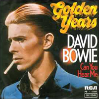
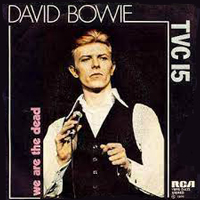
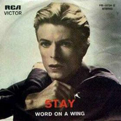

1976 - STATION TO STATION
Up to this point, most David Bowie album covers had featured photos taken specifically for the record. The stark monochrome shot that appeared on Station To Station, however, was a still taken from Nicolas Roeg's 1976 film adaptation of Walter Tevis' sci-fi novel The Man Who Fell To Earth (in which Bowie starred as the lead character, Thomas Jerome Newton). With its heavy white border and no-frills red text, the design conjured the utilitarian artworks of German bands like Kraftwerk and Neu!, whose music Bowie was increasingly gravitating towards, while also introducing The Thin White Duke - a "nasty character, indeed", in Bowie's own estimation.
Photographer: Steve Schapiro
STATION TO STATION
The return of the Thin White Duke
Throwing darts in lovers' eyes
Here are we, one magical moment
Such is the stuff, from where dreams are woven
Bending sound, dredging the ocean
Lost in my circle
Here am I, flashing no colour
Tall in this room overlooking the ocean
Here are we, one magical movement
From Kether to Malkuth
There are, you drive like a demon
From station to station
The return of the Thin White Duke
Throwing darts in lovers' eyes
The return of the Thin White Duke
Throwing darts in lovers' eyes
The return of the Thin White Duke
Making sure white stains
Once there were mountains on mountains
And once there were sun birds to soar with
And once I could never be down
Got to keep searching and searching
And oh, what will I be believing
And who will connect me with love?
Wonder who, wonder who, wonder when
Have you sought fortune, evasive and shy?
Drink to the men who protect you and I
Drink, drink, drain your glass, raise your glass high
It's not the side-effects of the cocaine
I'm thinking that it must be love
It's too late to be grateful
It's too late to be late again
It's too late to be hateful
The European canon is near
I must be only one in a million
I won't let the day pass without her
It's too late to be grateful
It's too late to be late again
It's too late to be hateful
The European canon is here
Should I believe that I've been stricken?
Does my face show some kind of glow?
It's too late to be grateful
It's too late to be late again
It's too late to be hateful
The European canon is here, yes it's here
It's too late, It's too late
It's too late, It's too late
It's too late
The European canon is near
It's not the side-effects of the cocaine
I'm thinking that it must be love
It's too late to be grateful
It's too late to be late again
It's too late to be hateful
The European canon is here
I must be only one in a million
I won't let the day pass without her
It's too late to be grateful
It's too late to be late again
It's too late to be hateful
The European canon is here, yes it's here
Should I believe that I've been stricken?
Does my face show some kind of glow?
It's too late to be grateful
It's too late to be late again
It's too late to be hateful
The European canon is here, yes it's here
It's too late, It's too late
It's too late, It's too late
It's too late
The European canon is here
GOLDEN YEARS
Golden years, gold, whop, whop, whop
Golden years, gold, whop, whop, whop
Golden years, gold, whop, whop, whop
Don't let me hear you say
Life's taking you nowhere, angel
(Come get up, my baby)
Look at that sky, life's begun
Nights are warm and the days are young
(Come get up, my baby)
There's my baby, lost that's all
Once I'm begging you save her little soul
Golden years, gold, whop, whop, whop
Come get up, my baby
Last night they loved you
Opening doors and pulling some strings, angel
(Come get up, my baby)
In walked luck and you looked in time
Never look back, walk tall, act fine
(Come get up, my baby)
I'll stick with you baby for a thousand years
Nothing's gonna touch you in these golden years
Golden years
Golden years, gold, whop, whop, whop
Come get up, my baby
Some of these days, and it won't be long
Gonna drive back down where you once belonged
In the back of a dream car twenty foot long
(Come get up, my baby)
Don't cry my sweet, don't break my heart
Doing all right, but you gotta get smart
Wish upon, wish upon, day upon day
I believe, oh Lord, I believe all the way
(Come get up, my baby)
Run for the shadows, run for the shadows
Run for the shadows in these golden years
There's my baby, lost that's all
Once I'm begging you save her little soul
Golden years, gold, whop, whop, whop
Come get up, my baby
Don't let me hear you say life's taking you nowhere, angel
(Come get up, my baby)
Run for the shadows, run for the shadows
Run for the shadows in these golden years
I'll stick with you baby for a thousand years
Nothing's gonna touch you in these golden years
Golden years
Golden years, gold, whop, whop, whop
Golden years, gold, whop, whop, whop
WORD ON A WING
In this age of grand delusion
You walked into my life out of my dreams
I don't need another change
Still you forced a way into my scheme of things
You say we're growing
Growing heart and soul
In this age of grand delusion
You walked into my life out of my dreams
Sweet name, you're born once again for me
Sweet name, you're born once again for me
Oh sweet name, I call you again
You're born once again for me
Just because I believe don't mean I don't think as well
Don't have to question everything in Heaven or Hell
Lord, I kneel and offer you my word on a wing
And I'm trying hard to fit among your scheme of things
It's safer than a strange land, but I still care for myself
And I don't stand in my own light
Lord, Lord, my prayer flies like a word on a wing
My prayer flies like a word on a wing
Does my prayer fit in with your scheme of things?
In this age of grand delusion
You walked into my life out of my dreams
Sweet name, you're born once again for me
Just as long as I can see
I'll never stop this vision flowing
I look twice and you're still glowing
Just as long as I can walk
I'll walk beside you, I'm alive in you
Sweet name, you're born once again for me
And I'm ready to shape the scheme of things
Ooh, ready to shape the scheme of things
Ooh, ready to shape the scheme of things
Ooh, ready to shape the scheme of things
Ooh, ready to shape the scheme of things
Ooh...
Lord, I kneel and offer you my word on a wing
And I'm trying hard to fit among your scheme of things
It's safer than a strange land, but I still care for myself
And I don't stand in my own light
Oh Lord, Lord, my prayer flies like a word on a wing
And I'm trying hard to fit among your scheme of things
But it's safer than a strange land, but I still care for myself
And I don't stand in my own light
Lord, Lord, my prayer flies like a word on a wing
My prayer flies like a word on a wing
Does my prayer fit in with your scheme of things?
TVC 15
Oh oh oh oh oh, oh oh oh oh oh
Oh oh oh oh oh, oh oh oh oh oh
Oh oh oh oh oh, oh oh oh oh oh
Up every evening 'bout half eight or nine
I give my complete attention to a very good friend of mine
He's quadraphonic, he's a, he's got more channels, a
So hologramic, oh, my TVC 15
I brought my baby home, she, she sat around forlorn
She saw my TVC 15, baby's gone, she
She crawled right in, my, my, she crawled right in my
So hologramic, oh, my TVC 15
Oh, so demonic, oh, my TVC 15
Maybe if I pray every each night I sit there pleading
"Send back my dream test baby, she's my main feature"
My TVC 15, yeah, he just stares back unblinking
So hologramic, oh, my TVC 15
One of these nights I may just jump down that rainbow way
Be with my baby, then we'll spend some time together
So hologramic oh my TVC 15
My baby's in there someplace, love's rating in the sky
So hologramic, oh, my TVC 15
Transition
Transmission
Transition
Transmission
Oh, my TVC 15
Uh oh, TVC 15
Oh, my TVC 15
Uh oh, TVC 15
Oh, my TVC 15
Uh oh, TVC 15
Oh, my TVC 15
Uh oh, TVC 15
Maybe if I pray every, each night I sit there pleading
"Send back my dream test baby, she's my main feature"
My TVC 15, yeah, he just stares back unblinking
So hologramic, oh, my TVC 15
One of these nights I may just, jump down that rainbow way
Be with my baby, then we'll spend some time together
So hologramic, oh, my TVC 15
My baby's in there someplace
Love's rating in the sky
So hologramic, oh, my TVC 15
Oh oh oh oh oh, oh oh oh oh oh
Oh oh oh oh oh, oh oh oh oh oh
Oh oh oh oh oh, oh oh oh oh oh
Transition
Transmission
Transition
Transmission
Oh, my TVC 15
Uh oh, TVC 15
Oh, my TVC 15
Uh oh, TVC 15
STAY
This week dragged past me so slowly
The days fell on their knees
Maybe I'll take something to help me
Hope someone takes after me
I guess there's always some change in the weather
This time I know we could get it together
If I did casually mention tonight
That would be crazy tonight
Stay - that's what I meant to say
Or do something, but what I never say is
Stay this time, I really meant to so bad this time
'Cause you can never really tell
When somebody wants something you want too
Heart wrecker, heart wrecker, make me delight
Life is so vague when it brings someone new
This time tomorrow I'll know what to do
I know it's happened to you
Stay - that's what I meant to say
Or do something, but what I never say is
Stay this time, I really meant to so bad this time
'Cause you can never really tell
When somebody wants something you want too
Stay - that's what I meant to say
Or do something, but what I never say is
Stay this time, I really meant to so bad this time
'Cause you can never really tell
When somebody wants something you want too
WILD IS THE WIND
Love me, love me, love me, love me, say you do
Let me fly away with you
For my love is like the wind
And wild is the wind, wild is the wind
Give me more than one caress
Satisfy this hungriness
Let the wind blow through your heart
For wild is the wind, wild is the wind
You touch me
I hear the sound of mandolins
You kiss me
With your kiss my life begins
You're spring to me, all things to me
Don't you know you're life itself
Like the leaf clings to the tree
Oh, my darling, cling to me
For we're like creatures of the wind
And wild is the wind, wild is the wind
You touch me
I hear the sound of mandolins
You kiss me
With your kiss my life begins
You're spring to me, all things to me
Don't you know you're life itself
Like the leaf clings to the tree
Oh, my darling, cling to me
For we're like creatures of the wind
And wild is the wind, wild is the wind
Wild is the wind, wild is the wind
Wild is the wind
SINGLES


